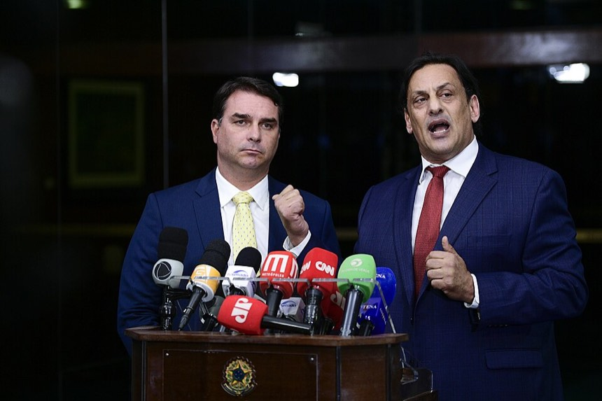
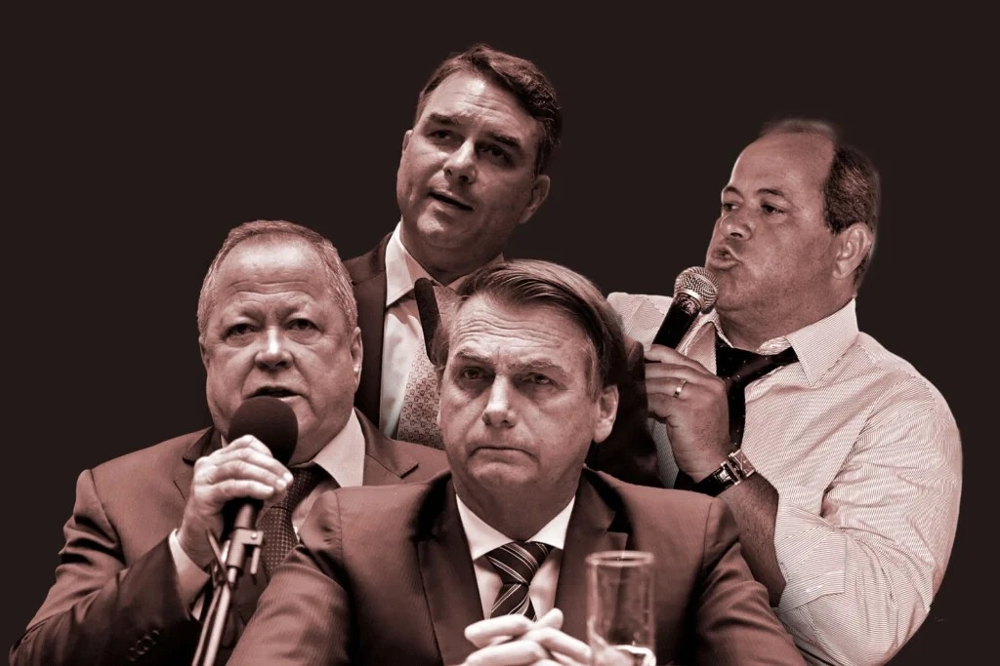
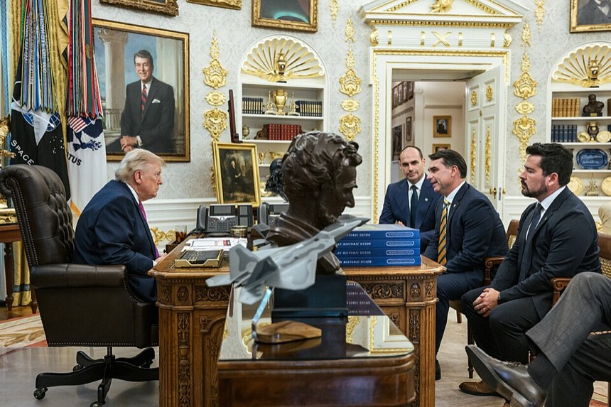
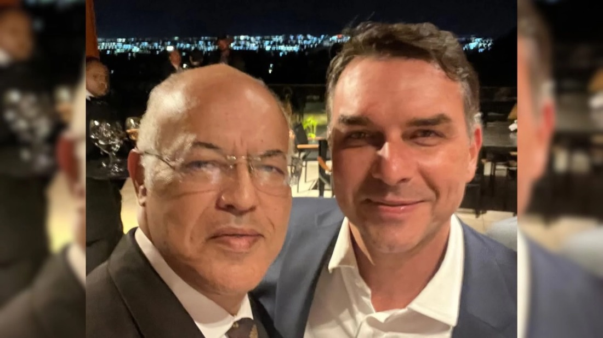
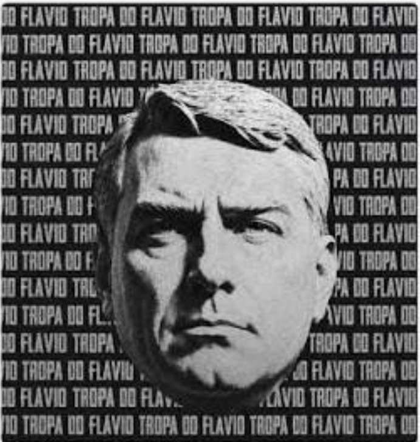

Antes de votar, veja com quem Flávio Bolsonaro anda
Milicianos homenageados, a família de um chefe de milícia no gabinete, a defesa do PM acusado de matar uma menina de 5 anos, um bispo que chamou a padroeira de pagã e a promessa de mudar a Constituição. Tudo com fonte. Clique e confira.
Fontes citadas nesta página
CNN Brasil · Folha de S.Paulo · Agência Brasil · Agência Senado · Poder360 · Metrópoles · The Intercept Brasil · Aos Fatos · CartaCapital · Conjur · Congresso em Foco · Brasil de Fato · InfoMoney · Nexo · IstoÉ · Jornal do Brasil · TSE · USGS · IEA
Policiais acusados de homicídio, milicianos e condenados pela morte de Marielle Franco cruzam a carreira de Flávio há 20 anos.
Advogado do acusado2024
Flávio advogou para o PM acusado de matar Ana Clara, de 5 anos
Ana Clara Gomes Machado brincava na porta de casa, em Niterói, quando foi morta a tiros de fuzil em 2 de fevereiro de 2021. O MP-RJ acusa o cabo da PM Bruno Dias Delaroli.
Quando a defesa perdeu no STJ e o policial ia a júri popular, Flávio, já senador, entrou no processo e assinou um recurso para reverter a decisão. O STJ negou.
Mais de cinco anos depois, não houve julgamento. O PM continua solto.
"Ele tentou anular o júri do cara que matou minha filha."Cristiane Gomes da Silva, mãe de Ana Clara, ao Revelando
Flávio assinou um habeas corpus no STJ para tentar parar a ação penal contra dois ex-sócios de Glaidson Acácio dos Santos, dono da GAS Consultoria, a pirâmide financeira de Cabo Frio.
Deu a maior medalha da Alerj a Adriano da Nóbrega quando ele estava preso por homicídio
Adriano, ex-capitão do Bope, foi apontado pelo MP-RJ como chefe do Escritório do Crime, grupo de matadores de aluguel, e de milícia na Zona Oeste. Morreu em 2020 numa operação policial na Bahia.
A Medalha Tiradentes foi entregue a ele na cadeia, por indicação de Flávio. Flávio admitiu a entrega.
Um ex-colega de cela, o vereador Ítalo Ciba, disse ao jornal O Globo que Flávio visitou Adriano na prisão mais de uma vez.
"Não adianta querer me vincular com a milícia."Flávio Bolsonaro
A mulher e a mãe do miliciano receberam salário no gabinete de Flávio
Danielle Mendonça da Costa da Nóbrega, então mulher de Adriano, foi contratada em setembro de 2007 e ficou 11 anos. Raimunda Veras Magalhães, a mãe, entrou em abril de 2016.
As duas foram exoneradas no mesmo dia, 13 de novembro de 2018, um mês depois de Flávio ser eleito senador.
O MP-RJ associou as duas ao esquema das rachadinhas operado por Fabrício Queiroz.
Havia provas. Houve denúncia. Por que nunca houve julgamento?

Flávio e o advogado Frederick Wassef comentam a decisão do STF que manteve o foro privilegiado do senador no caso, 30/11/2021. Foto: Agência Senado (CC BY 2.0)
O Coaf apontou R$ 1,2 milhão em movimentações atípicas de Fabrício Queiroz, assessor de Flávio na Alerj. Funcionários do gabinete transferiam dinheiro para ele. A ex-assessora Luiza Souza Paes disse ao MP-RJ que devolvia cerca de 90% do salário, perto de R$ 160 mil, e que nunca trabalhou de fato para Flávio.
O MP-RJ denunciou Flávio como líder de uma organização criminosa, por peculato, lavagem de dinheiro e apropriação indébita entre 2007 e 2018. Queiroz seria o operador. Mais 15 pessoas foram denunciadas.
A revista Época revelou que a Abin, no governo Jair Bolsonaro, fez relatórios para orientar a defesa de Flávio a "demonstrar a nulidade processual" do caso. A defesa confirmou que eram autênticos. A Abin negou tê-los produzido.
O STJ anulou as decisões do juiz do caso, incluindo a quebra de sigilo de Flávio e de outras 94 pessoas. Em novembro, a Segunda Turma do STF anulou 4 dos 5 relatórios do Coaf por 3 votos a 1, com voto de Kassio Nunes Marques, indicado por Jair um ano antes.
Sem as provas anuladas, o próprio MP-RJ pediu e o TJ-RJ arquivou a denúncia. Em 2023, o STJ barrou por questões processuais um novo pedido de quebra de sigilo, sem analisar o mérito.
A Justiça nunca disse que o esquema não existiu. As provas caíram por questões de procedimento, e as acusações nunca foram julgadas.
Advogado amigo de Flávio recebia minutas de decisões do STJ antes da publicação, diz a PF
Segundo a Polícia Federal, o escritório de Willer Tomaz, amigo de Flávio, recebia minutas de acórdãos do STJ e pareceres do Ministério Público Federal antes de serem publicados.
O secretário de Tecnologia do STJ, Humberto Pradera, foi exonerado e alvo de busca. A PF lista sete casos em que um procurador aposentado teria antecipado ou moldado pareceres a favor dos interesses do advogado.
A investigação não liga, até agora, esses vazamentos às decisões das rachadinhas. Tomaz nega as acusações.
No enterro da juíza morta por PMs, Flávio culpou a própria juíza
A juíza Patrícia Acioli, de São Gonçalo, mandava policiais de grupos de extermínio a júri popular. Foi morta com 21 tiros na porta de casa por policiais militares. A Justiça condenou 11 PMs pelo crime.
Logo depois, Flávio, então deputado estadual, escreveu no Twitter que a forma como ela tratava policiais "contribuiu" para ela ter muitos inimigos. Em 2026, o post seguia no ar.
"Que Deus tenha essa juíza, mas a forma absurda e gratuita com que ela humilhava policiais nas sessões contribuiu para ter muitos inimigos."Flávio Bolsonaro no Twitter, agosto de 2011
Votou para pôr o mandante da morte de Marielle no Tribunal de Contas e foi o único contra a medalha para ela

Os Bolsonaro e os irmãos Brazão, condenados em 2026 como mandantes da morte de Marielle. Ilustração: The Intercept Brasil
Em abril de 2015, Flávio votou em Domingos Brazão para conselheiro vitalício do TCE-RJ. Só o PSOL, partido de Marielle, votou contra. Em 2026, o STF condenou Domingos e Chiquinho Brazão como mandantes do crime.
Em abril de 2018, menos de um mês depois do assassinato, a Alerj aprovou a Medalha Tiradentes para Marielle. Flávio foi o único deputado a votar contra.
Na campanha de 2022, Flávio e Chiquinho Brazão subiram juntos num carro de som. O vídeo foi publicado pelo próprio Chiquinho.
Quem quebrou a placa de Marielle foi o vice de Flávio na eleição de 2016
Rodrigo Amorim e Daniel Silveira, candidatos do PSL, posaram quebrando ao meio uma placa em homenagem a Marielle Franco. Amorim foi candidato a vice-prefeito do Rio na chapa de Flávio em 2016.
Em 2021, os dois repetiram a foto no gabinete de Silveira, com metade da placa emoldurada. Ao fundo aparecia uma foto de Flávio ao lado de um fuzil.
A foto da placa quebrada é dos próprios autores. Veja na reportagem.
Condenado no caso Marielle pediu dinheiro ao gabinete de Flávio, e a emenda saiu
Em 2023, Robson Calixto, o "Peixe", ex-assessor de Domingos Brazão, negociou emendas com a assessora Maria de Fátima Bezerra Castro, do gabinete de Flávio no Senado. Calixto foi condenado em 2026 por integrar o grupo dos Brazão.
Calixto foi convidado para um evento com Flávio para cobrar o dinheiro pessoalmente.
Uma emenda de Flávio mandou R$ 199 mil ao Ifop, entidade que a Polícia Federal investiga por desvio.
O bispo que chamou a devoção a Maria de culto pagão e o deputado que quis restringir o título de padroeira estão ao lado dele.
DocumentadoBatismo em janeiro de 2024
Flávio escolheu ser batizado na igreja do bispo que quer tirar o título de Nossa Senhora Aparecida
No livro A Bomba, de 2001, o bispo JB Carvalho, fundador da Comunidade das Nações, em Brasília, associa a devoção a Maria à "adoração pagã", chama de ilegal a lei que fez de Aparecida a padroeira do Brasil e pede que deputados e senadores mudem a regra.
Em janeiro de 2024, Flávio e a mulher, Fernanda, foram batizados na igreja dele.
Em novembro de 2025, Flávio levou ao pai, preso na Polícia Federal, outro livro do bispo, Metanoia.
Ao lado do autor do projeto contra a padroeira, Flávio prometeu "Brasil para Jesus"
Em 2007, o deputado Victório Galli apresentou o PL 2.623, que trocava "padroeira do Brasil" por "padroeira dos brasileiros católicos apostólicos romanos".
Galli foi assessor especial da Presidência no governo Jair Bolsonaro, na Casa Civil, de fevereiro a junho de 2019.
Na abertura da feira Norte Show, em Sinop (MT), Flávio esteve com Galli, que publicou estar feliz ao lado do "amigo" senador. Em 2026, Galli é candidato a deputado e apoia Flávio.
"Quando eu for presidente, um dos meus primeiros atos será decretar que o Brasil é do Senhor Jesus Cristo."Flávio Bolsonaro, agosto de 2026
Minerais estratégicos oferecidos aos Estados Unidos, estatais e o litoral.
DocumentadoMarço e maio de 2026
Flávio subiu num palco nos EUA e ofereceu as terras raras do Brasil como "solução da América"

Donald Trump recebe Flávio Bolsonaro, Eduardo Bolsonaro e Paulo Figueiredo no Salão Oval, maio de 2026. Imagem publicada por Trump no Truth Social. Foto: domínio público, via Wikimedia Commons
Na CPAC, conferência conservadora nos EUA, em 28 de março de 2026, disse que o Brasil é a solução para os americanos deixarem de depender da China em minerais críticos. O Brasil tem a segunda maior reserva de terras raras do mundo.
Em maio, depois de se reunir com Trump, prometeu parcerias de longo prazo com os EUA no setor se for eleito.
André Marinho, aliado de Flávio, escreveu um plano de 22 páginas em inglês para essa parceria, o "Prosperity Partnership". Ele confirma a autoria e nega ligação com a campanha.
"Brazil is America's solution to break dependence on China for critical minerals, especially rare earth elements."Flávio Bolsonaro na CPAC, 28/03/2026
Terras raras: quem fica com o valor da riqueza brasileira?
O Brasil tem a segunda maior reserva de terras raras do planeta. Mas ter o minério e dominar a tecnologia que o transforma em ímãs, motores e equipamentos avançados são coisas muito diferentes. A pergunta para qualquer acordo com os EUA é quem extrai, quem processa, quem fabrica e onde ficam os empregos.
Onde estão as maiores reservas
Milhões de toneladas de óxidos de terras raras (REO), estimativa do USGS para 2026
China44
Brasil11
Austrália6,3
Rússia3,8
Vietnã3,5
Estados Unidos1,9
O mundo tem cerca de 75 milhões de toneladas. O USGS trabalhava antes com cerca de 21 milhões para o Brasil e revisou o número na edição de 2026. Reserva não é receita garantida: teor, custo, licenciamento e preço variam muito.
Quanto mais à direita na cadeia, mais tecnologia, emprego qualificado e margem. Exportar concentrado deixa as etapas 3 a 5 no país que compra.
A força da China está no processamento, não só nas minas
Participação da China na cadeia mundial de terras raras para ímãs, em %, dados de 2024
Extração60%
Separação e refino91%
Fabricação de ímãs94%
Ter jazida não dá controle da indústria. É preciso química, fábricas, escala e compradores. É exatamente essa parte que os EUA também não têm e querem garantir.
A única mina comercial de terras raras do Brasil já tem dono americano
A USA Rare Earth concluiu em 3 de setembro de 2026 a compra da Serra Verde, dona da mina Pela Ema, em Minaçu (GO), por cerca de US$ 2,8 bilhões: US$ 300 milhões em dinheiro e o resto em ações.
A mina produz carbonato misto. A separação e a fabricação de ímãs acontecem fora do país.
Em 16 de setembro, Lula sancionou a Política Nacional de Minerais Críticos: R$ 2 bilhões num fundo garantidor, R$ 5 bilhões em créditos fiscais para beneficiar e industrializar no Brasil e controle sobre operações sensíveis ao interesse nacional.
A Serra Verde já pertencia a fundos dos EUA e do Reino Unido. Não há indicação de que Flávio tenha participado da venda.
Relator da PEC das Praias, Flávio deu parecer a favor de vender terrenos do litoral
A PEC 3/2022 permite que particulares comprem os terrenos de marinha, faixas do litoral que hoje pertencem à União. Flávio foi o relator no Senado e deu parecer favorável.
A votação na CCJ foi adiada em dezembro de 2024 depois de críticas pelo risco ambiental e pelo risco à praia pública. Flávio incluiu no texto um trecho que garante o acesso livre às praias.
Reúne embaixadores no Palácio da Alvorada para atacar as urnas eletrônicas.
Apoiadores invadem e depredam as sedes dos Três Poderes em Brasília.
O TSE declara Jair inelegível por 8 anos, por 5 votos a 2, pelo ataque às urnas na reunião com embaixadores.
A Primeira Turma do STF condena Jair a 27 anos e 3 meses de prisão pela trama golpista. A condenação fica definitiva em novembro.
Preso na Polícia Federal, recebe de Flávio um livro do bispo JB Carvalho.
A defesa pede ao STF a revisão da condenação. A PGR diz que não há fato novo. O pedido será julgado pela Segunda Turma, onde estão os dois ministros indicados por Jair.
Dois dias depois da eleição, Flávio prometeu usar o novo Congresso para mudar a Constituição
"O Brasil já me deu um Congresso muito mais à direita do que é hoje."Flávio Bolsonaro, 6/10/2026, ao falar em mudar a Constituição para "redemocratizar" o país
No dia seguinte, depois do temor até entre aliados, listou as mudanças: reforma do Judiciário e do STF, redução da maioridade penal de 18 para 16 anos, mudanças na reforma tributária e fim da reeleição.
Não detalhou o que mudaria no Judiciário. A campanha citou limites às decisões individuais dos ministros do STF.
Com o centrão, o PL tem os votos para mudar a Constituição nas duas Casas
Uma emenda à Constituição precisa de 3/5 dos votos, em dois turnos: 308 deputados e 49 senadores. O PL sozinho não chega lá. Somado aos partidos do centrão, passa nas duas Casas.
Câmara dos Deputados, 513 cadeiras a partir de 2027
PL 121Centrão 207Esquerda 124Outros 61
Maioria 257Muda a Constituição 308
PL + centrão = 328 deputados. São 20 a mais do que o necessário para aprovar uma emenda constitucional.
Senado Federal, 81 cadeiras a partir de 2027
PL 28Centrão 30Esquerda 15Outros 8
Maioria 41Muda a Constituição 49
PL + centrão = 58 senadores. São 9 a mais do que o necessário. O PL terá a maior bancada do Senado desde 1988.
Centrão aqui inclui União Brasil, PP, PSD, Republicanos e MDB. Esses partidos não votam sempre em bloco, mas costumam compor com quem governa.
Lucas Pavanato, deputado federal eleito pelo PL, o partido de Flávio. Comentário num vídeo com Eduarda Campopiano, outubro de 2026.
"Não devo nada ao feminismo. Nenhuma mulher deve."
Eduarda Campopiano, deputada estadual eleita pelo PL, o partido de Flávio. A mais votada do país, com 1,96 milhão de votos. Ela se define como "a maior inimiga das feministas de SP".
"Nenhum negro nessa sala foi escravizado."
Eduarda Campopiano (PL), num debate sobre cotas na Câmara de Praia Grande
Campopiano questiona o feminicídio como crime e disse "Glória a Deus que colonizaram" sobre os indígenas. Foi alvo de representações no Ministério Público por falas racistas e transfóbicas.
Como vereador, Pavanato propôs proibir pessoas trans em banheiros femininos.
Campopiano é deputada estadual e não vota emendas à Constituição federal. Ela diz que não é contra o voto feminino.
O projeto que proíbe o casamento entre pessoas do mesmo sexo já passou numa comissão e espera a nova maioria

Pastor Eurico, relator do projeto, com Flávio Bolsonaro. Em março de 2026, recém-filiado ao PSDB, Eurico garantiu palanque para Flávio em Pernambuco. Foto: reprodução, Jamildo.com, 12/03/2026
O STF reconheceu por unanimidade a união entre pessoas do mesmo sexo. Em 2013, o CNJ proibiu os cartórios de recusarem esses casamentos (Resolução 175). Não existe lei aprovada pelo Congresso garantindo esse direito.
O PL 5.167/2009 muda o Código Civil para dizer que "nenhuma relação entre pessoas do mesmo gênero pode se equiparar ao casamento ou à entidade familiar".
O relator, Pastor Eurico, então no PL de Pernambuco, mandou arquivar o projeto que garantia o casamento (PL 580/2007) e salvou só o que proíbe. Argumentou que a união homoafetiva não tem a finalidade de procriação.
A Comissão de Previdência, Assistência Social, Infância, Adolescência e Família aprovou o parecer por 12 votos a 5. Deputados governistas deixaram a sessão para tentar obstruir.
O projeto ainda precisa passar pelas comissões de Direitos Humanos e de Constituição e Justiça. Se aprovado nelas, pode ir ao Senado sem votação no plenário da Câmara, salvo recurso de 52 deputados.
Hoje no PSDB, Eurico é aliado declarado de Flávio. A Câmara e o Senado de 2027 têm maioria do PL e do centrão, os partidos que aprovaram o parecer.
Com o novo Senado, dá para indicar 4 ministros do STF e afastar os que incomodam
A vaga de Luís Roberto Barroso está aberta desde outubro de 2025.
Luiz Fux se aposenta em abril de 2028, Cármen Lúcia em abril de 2029 e Gilmar Mendes em dezembro de 2030.
Indicar um ministro exige 41 votos no Senado. Afastar um ministro por impeachment exige 54, dois terços da Casa. PL e centrão somam 58.
Votos no Senado a partir de 2027
Aprova ministro 41Impeachment 54
PL + centrão = 58. Quatro a mais do que o necessário para o impeachment de um ministro do STF.
"Como a gente tá aqui com os candidatos ao Senado, vocês são a favor de impeachment do Alexandre de Moraes? Eles vão ser cobrados nas eleições por isso."
Flávio Bolsonaro, reunião com candidatos ao Senado em Brasília, 11/08/2026
"É muito importante ter Senado que seja nosso."
Flávio Bolsonaro, live na véspera do 1º turno, 03/10/2026, ao pedir senadores a favor do impeachment de ministros do STF
"O impeachment de Alexandre de Moraes vai acontecer independentemente de quem se eleja presidente da República."
Marcel van Hattem (Novo-RS), senador eleito, 17/10/2026. Ele diz que "a maioria no Senado já foi formada".
Na reunião de agosto estavam candidatos ao Senado apoiados por Flávio, como Bia Kicis (PL-DF), Deltan Dallagnol (Novo-PR) e Guilherme Derrite (PP-SP). Segundo a Gazeta do Povo, responderam que sim. Foto de van Hattem: Câmara dos Deputados (CC BY 3.0).
Dark Horse: o filme, o banqueiro e o caminho incompleto do dinheiro
Flávio negociou com Daniel Vorcaro, ex-dono do Banco Master, dinheiro para um filme sobre o pai. A Polícia Federal rastreou parte do valor até um fundo nos EUA. O resto do caminho ainda não está claro.
R$ 134 minegociados com Vorcaro (US$ 24 milhões)
~R$ 62 miidentificados em remessas (US$ 12,33 milhões)
?destino final ainda não esclarecido
Mensagens obtidas pela PF2025 · divulgadas em 13/05/2026
"Irmão, estou e estarei contigo sempre"
O The Intercept Brasil publicou as conversas em 13 de maio de 2026. O Estadão confirmou com fontes da investigação que são autênticas: vieram do primeiro celular de Vorcaro apreendido pela PF. Na manhã daquele dia, Flávio negou o financiamento. Horas depois, admitiu em vídeo que procurou Vorcaro.
Reconstituição visual de trechos reportados · não é print original
Flávio Bolsonaropara Daniel Vorcaro
8 de setembro de 2025
▶ ▂▃▅▂▆▃▂▅▃"[O filme] tá num momento muito decisivo aqui."Áudio. Trecho citado pela PF, sobre os atrasos nas parcelas.
16 de novembro de 2025, véspera da Operação Compliance Zero
"Irmão, estou e estarei contigo sempre."Mensagem em que também pede "uma luz".
No mesmo dia, Flávio tentou ligar para Vorcaro. No dia seguinte, a PF deflagrou a Operação Compliance Zero.
Eduardo Bolsonaropara o publicitário Thiago Miranda, março de 2025
"O ideal seria haver os recursos já nos EUA."Miranda mandou a captura desta conversa para Vorcaro, segundo a PF.
Mostramos só trechos citados nas reportagens. Não há horários, respostas ou mensagens inventadas.
Flávio BolsonaroPede e cobra as parcelas. Diz que só buscou patrocínio privado.
pedido e cobranças · não é transferência
Daniel VorcaroEx-dono do Banco Master. Teria se comprometido com US$ 24 milhões, segundo carta de compromisso citada pela PF.
segundo o delator, quem pediu as remessas foi o cunhado de Vorcaro
Fabiano ZettelCunhado de Vorcaro, preso. Depoimento marcado para 21/10/2026.
pedido atribuído em delação
Origem do dinheiroDesconhecida. O liquidante do Master não achou registro de patrocínio do filme pelo banco. Na véspera da 1ª remessa, a Entre recebeu R$ 12 milhões da Super Empreendimentos.
Entre InvestimentosDe Antonio Carlos Freixo Júnior, apontado como doleiro de Vorcaro. Virou delator.
7 remessas · US$ 12,33 milhões · ~R$ 62 milhões · fev. a set. 2025
Havengate Development Fund LPFundo nos EUA administrado pelo advogado Paulo Calixto, aliado de Eduardo Bolsonaro. A PF apura se o dinheiro bancou a estadia de Eduardo nos EUA.
uso final não comprovado
Despesas do filme?Não se sabe quanto chegou à produção.
Em paralelo: entre junho de 2025 e abril de 2026, 20 contratos de câmbio trouxeram US$ 2,8 milhões (R$ 14,8 milhões) de uma empresa nos EUA para a produtora Go Up, registrados como empréstimos. É cerca de três vezes o valor do contrato citado.
movimentação descrita pela PF relato, pedido ou destino não confirmado
A diferença não é dinheiro desviado: é o que foi prometido e não apareceu nas remessas rastreadas. As reportagens variam entre R$ 131 e 134 milhões e entre R$ 60 e 62 milhões, conforme o câmbio e a data.
Linha do tempo
Como a história se desenrolou
Primeira remessa da Entre ao Havengate: US$ 2 milhões.
Eduardo escreve que "o ideal seria haver os recursos já nos EUA".
Primeiras mensagens diretas entre Flávio e Vorcaro. A PF vê sinais de um encontro no dia seguinte.
Flávio cobra Vorcaro pelos atrasos, em áudio.
Flávio convida Vorcaro para um jantar com a equipe do filme, marcado para 6 de novembro.
"Irmão, estou e estarei contigo sempre." Flávio tenta ligar para Vorcaro.
A PF deflagra a Operação Compliance Zero contra o Banco Master.
O Intercept publica as mensagens. Flávio nega pela manhã e admite depois.
Freixo Júnior depõe como delator.
A PF pede ao STF mais 90 dias. O relator é André Mendonça.
O liquidante do Master diz à Câmara que não achou registro de patrocínio do filme.
Quem aparece
Os personagens
Flávio BolsonaroPediu e cobrou o dinheiro do filme. Nega vantagem e diz não ter participado dos pagamentos.
Daniel VorcaroEx-controlador do Banco Master, com quem o financiamento foi negociado.
Eduardo BolsonaroIrmão de Flávio. A PF apura se o dinheiro bancou sua vida nos EUA.
Fabiano ZettelCunhado de Vorcaro. Teria pedido as remessas, segundo o delator.
Antonio Carlos Freixo Jr.Dono da Entre. Diz que achava ser investimento imobiliário. A PF vê "aparente contradição" com a carta que cita o filme.
Paulo CalixtoAdvogado que administra o fundo Havengate, nos EUA.
Thiago MirandaPublicitário apontado como intermediário dos repasses.
Mario Frias (PL-SP)Deputado e produtor executivo do filme. Investigado por emendas, veja abaixo.
Investigado pela PF2026
Segunda frente: emendas de Mario Frias e a produtora
A PF investiga se dinheiro público de emendas do deputado Mario Frias (PL-SP), produtor executivo do filme, foi desviado para a produção. Frias foi alvo de busca e apreensão.
Frias destinou emendas ao Instituto Conhecer Brasil (ICB). A CGU achou indícios de irregularidade no projeto "Jovem Empreendedor", feito pelo ICB com R$ 1 milhão de emenda dele: possível direcionamento, serviços não prestados e sobrepreço.
Os investigadores apontam uma transferência de R$ 750 mil da NTT Brasil para a Go Up, produtora do filme.
Não está provado que o dinheiro das emendas pagou o filme. Os investigados negam irregularidades.
Buscou patrocínio privado para um filme sobre o pai, não deu nada em troca e não participou dos pagamentos. Não apresentou contrato do acordo.
Go Up e Mario Frias
Negam ter recebido dinheiro de Vorcaro, do Master ou de empresas ligadas. A PF achou documentos sem data e com datas de assinatura conflitantes.
Liquidante do Master
Não achou registros de patrocínio ou financiamento do filme pelo banco, nem operações com o Havengate ligadas à produção.
Freixo Júnior, delator
Diz que as remessas foram apresentadas como investimento imobiliário nos EUA e que não sabia do filme.
Sem resposta até 19/10/2026
O que a investigação ainda não respondeu
Origem: de onde veio o dinheiro que a Entre mandou para fora?
Destino: quem recebeu depois do fundo nos EUA?
Finalidade: quanto pagou de fato despesas do filme?
Documentos: quais contratos justificam cada remessa?
Dinheiro público: houve desvio de emendas ou contrapartida de agente público?
Ninguém foi condenado por esses fatos. A PF pediu mais 90 dias ao STF em 15/10/2026.
18 de outubro de 2026 · Debate da Band
O desafio foi feito. A resposta não veio.
No debate presidencial, Lula desafiou Flávio Bolsonaro a autorizar a abertura dos sigilos bancários e telefônicos dos dois candidatos e de suas famílias, para análise pela Justiça. Flávio não disse se aceitava e mudou de assunto.
"Eu desafio você [...] abrimos a nossa conta bancária, abrimos o nosso sigilo telefônico [...] eu abro da minha família inteira e você abre da sua família e vamos pedir pra Justiça."
Lula propôs entregar os dados ao presidente do STF e ao presidente do TSE para avaliação antes da eleição.
Na sua vez, Flávio disse que não tinha nada a esconder, acusou Lula de receber "dinheiro por fora" e passou a falar de soberania e segurança nas fronteiras. Não respondeu se aceitava o desafio.
Lula repetiu o desafio num ato de campanha e em vídeo no Instagram. Disse que vai preparar uma procuração autorizando a abertura do próprio sigilo e dos familiares, com a condição de que a família Bolsonaro faça o mesmo, e prometeu entregar os dados ao Tribunal Superior Eleitoral no dia seguinte.
Lula anunciou a entrega, mas a página não tem registro de que os documentos já tenham sido entregues. Flávio não confirmou publicamente que aceita o desafio.
Os documentos poderiam esclarecer o que as declarações não esclarecem?
A investigação sobre o financiamento de Dark Horse deixou perguntas sobre a origem, o caminho e o destino do dinheiro. A abertura dos sigilos, autorizada legalmente, poderia ajudar a responder, desde que os dados tivessem relação com a investigação e fossem analisados pelas autoridades competentes.
Não aderir a um desafio político não é prova de crime. Também não dispensa explicar as movimentações investigadas.
Compartilhe a cronologia
O texto enviado traz só os fatos, as datas e o link para as fontes.
Uma peça do canal oficial do PL com o rosto de Flávio foi comparada a uma propaganda do regime de Mussolini, de 1934. O partido apagou a publicação, negou a intenção e pediu desculpas. O que a semelhança mostra, e o que ela não prova?
Documentado8 de outubro de 2026
"Tropa do Flávio" e o "SÌ" de Mussolini
Propaganda fascista · Itália · 1934Palazzo Braschi, sede da federação fascista em Roma, no plebiscito de 1934. Foto: autor desconhecido, domínio público

PL · Brasil · 2026Peça publicada no canal oficial do PL no WhatsApp para divulgar um grupo de apoiadores de Flávio. Captura da peça divulgada nas redes após a publicação; apagada pelo PL
Comparação de composição visual, não prova de intenção.
Um retrato dominante organiza toda a mensagem: o líder é a peça.
A expressão repetida cria ritmo e identidade: "Tropa do Flávio" em 2026, "SÌ" (sim) em 1934.
O nome do movimento e a figura do líder ocupam quase todo o campo visual. Não sobra espaço para outra informação.
Os contextos são muito diferentes: uma peça digital de campanha numa democracia, contra a propaganda oficial de uma ditadura num plebiscito sem disputa real.
Linha do tempo92 anos de distância
De Roma, 1934, ao WhatsApp do PL, 2026
Para o plebiscito do regime, a fachada do Palazzo Braschi, sede da federação fascista em Roma, é coberta pelo rosto de Mussolini e pela palavra "SÌ" repetida.
O canal oficial do PL no WhatsApp publica o rosto de Flávio em preto e branco cercado por "Tropa do Flávio" repetido, para divulgar um grupo de apoiadores com mais de 250 mil membros.
Usuários comparam a peça à de 1934. A publicação é apagada, mas as capturas já circulavam.
A imprensa registra a resposta do PL: coincidência, autoria da juventude do partido e pedido de desculpas.
As datas mostram a distância no tempo. Não indicam que uma peça foi feita a partir da outra.
Análise
O que é parecido e o que não é
Elemento
PL, 2026
Palazzo Braschi, 1934
Leitura
Retrato
Rosto de Flávio em preto e branco
Rosto de Mussolini
Composição comparável
Texto repetido
"Tropa do Flávio"
"SÌ"
A repetição cria identidade e ênfase
Meio
Canal do partido no WhatsApp
Fachada de um edifício
Alcance e natureza diferentes
Sistema político
Campanha numa democracia
Plebiscito sob ditadura
Contextos não equivalentes
Reação
Peça apagada, PL negou intenção
Propaganda oficial do regime
A versão do partido entra no registro
Culto ao líder usa enquadramento monumental, repetição de símbolos e fusão entre a pessoa e o movimento. Esses recursos não são exclusivos de ditaduras e aparecem em outras campanhas. O sentido depende da combinação, da autoria e do contexto. Fascismo italiano e nazismo alemão têm pontos em comum, mas não são a mesma coisa.
O outro lado11 de outubro de 2026
O que o PL disse e o que um historiador viu
PL
Negou referência intencional ao fascismo e chamou a semelhança de coincidência. Disse que a peça foi feita pela juventude do partido, o PL Jovem, inspirada em design gráfico antigo. Retirou a publicação e pediu desculpas pelo conteúdo e pelas interpretações.
Odilon Caldeira, historiador
Professor da Universidade Federal de Juiz de Fora e coordenador do Observatório da Extrema Direita. Disse que a semelhança com a propaganda fascista era clara, duvidou que o objetivo fosse atrair grupos neofascistas e sugeriu que podia ser uma estratégia para provocar adversários e levar o debate para a natureza ideológica do bolsonarismo.
O que dá para verificar
A publicação no canal oficial do PL
A composição da peça
O paralelo com a foto de 1934
A retirada depois da repercussão
A resposta pública do partido
O que não está demonstrado
Que Flávio mandou copiar Mussolini
Que a equipe quis homenagear o fascismo
Que os apoiadores da campanha compartilham essa ideologia
Uma semelhança gráfica não prova intenção. Mas a propaganda política tem história, e quando um partido reproduz a linguagem visual do culto ao líder de uma ditadura, é legítimo perguntar como a peça foi criada, aprovada e distribuída.
Em resumo
Pessoa
O que fez
Ligação com Flávio
Bruno Delaroli
Acusado de matar Ana Clara, 5 anos
Flávio foi seu advogado
Adriano da Nóbrega
Chefe de milícia, segundo o MP-RJ
Medalha na prisão; mãe e mulher no gabinete
Ronald Pereira
Condenado pela morte de Marielle
Homenageado por Flávio
Domingos Brazão
Condenado como mandante
Flávio votou nele para o TCE-RJ
Robson Calixto
Condenado no caso Marielle
Negociou emenda com o gabinete
Rodrigo Amorim
Quebrou a placa de Marielle
Vice de Flávio em 2016
JB Carvalho
Pediu o fim do título de padroeira
Flávio foi batizado na igreja dele
Victório Galli
Projeto contra a padroeira
Aliado em campanha
Daniel Vorcaro
Ex-dono do Banco Master, preso em 2025
Negociou R$ 134 milhões para o filme do pai de Flávio